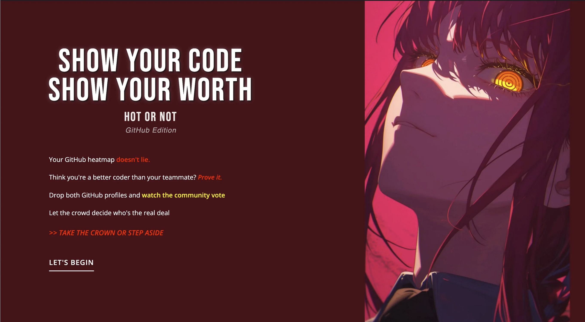
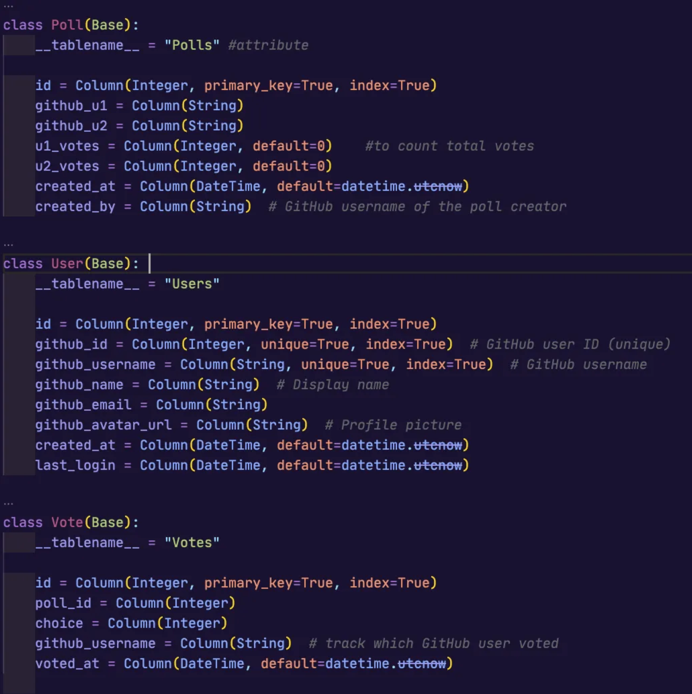
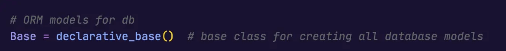
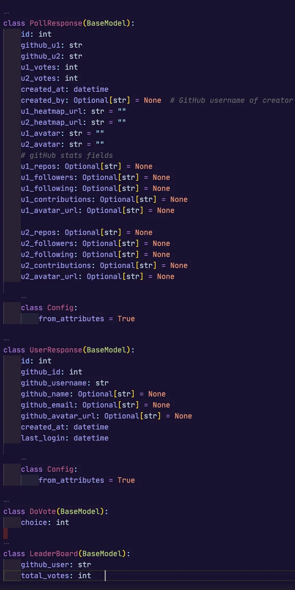
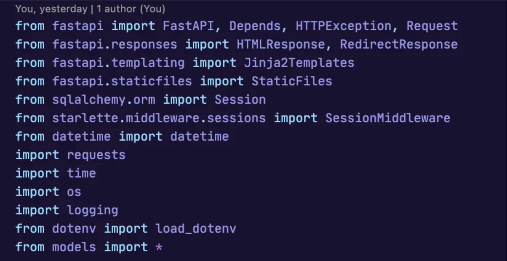
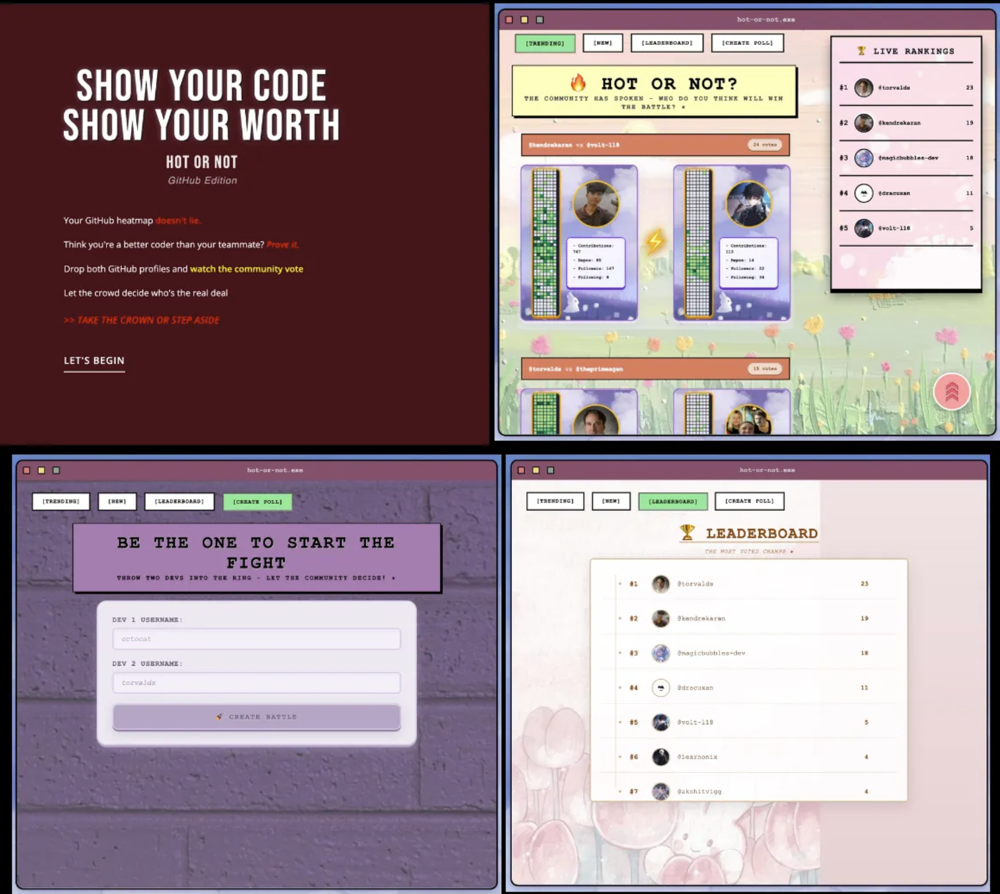

How to build a "Hot or Not" for GitHub
15 Sept, 2025

(been meaning to write about this since August when I first built the site but this was sitting in the drafts since the whole time. Guess we finally did it :D
https://isyourcodehot.onrender.com/ Let's begin….)
It goes without saying that the first step in the execution of your idea is to always draw out a rough plan of your application's workflow — what would be the features, interaction between components, a basic design of the system and choosing the tech stack you're comfortable with or want to learn.
Writing the backend logic of the GitHub profiles rating system (inspired by 'Hot or Not') was not exactly difficult but being new to this, there were certain nuances of FastAPI and SQLite that needed figuring out. The reason I decided to write this is so that I can remember the how's and why's behind using certain functions for this.
(contains only the backend part)
The Tech stack we used
• FastAPI: The core web framework for building the backend API (since i can already work with python)
• Pydantic: Used for defining data schemas (models) and data validation (it's a separate library but FastAPI works well with it)
• SQLite: The database for storing data, chosen for its simplicity and zero setup.
Now we'll dive deeper into all of this, trying to understand the whole process along with simplifying those heavy terms.
Step 1: Define the data schema
When we say data schema, it refers to the structure and rules of the data that your backend will accept. Like what fields would exist, their types and validation rules.
This schema is defined using Models.
We deal with two kind of "models" here:
SQLAlchemy Models (Base) and Pydantic Models (BaseModel)
So why do we need these two different kind of models? Because when we build a backend API, we deal with two things:
1. the database — where data is stored permanently
2. the API — where clients (frontend, other services) send and receive data
SQLAlchemy is a Python SQL toolkit and an Object Relational Mapper. An ORM acts as an interpreter between object oriented languages and RDBMS. This means we can work with our data as python objects instead of raw coding SQL queries.
Pydantic is a data validation library in python that helps to define which data you want to accept and it validates the incoming API requests.
So for our voting system what are the models that we would need? (here we are allowing users to create polls themselves between two candidates)
A. Let's begin with SQLAlchemy Models

• SQLAlchemy Models (Base): they define the db tables and how python objects map them. here, each class = one table, each attribute = one column
• Before defining models, we need to initialize the base class that would act as a base to define all our models. All our table classes will inherit from this base class : declarative_base()

• We also need to create an engine for connecting our python code to database. It is done by calling create_engine() function in sqlalchemy
• after creating engine, we need to create Session objects that are created by sessionmaker() factory function.
different sessions are needed for each incoming request. Like engine establishes a connection with database, sessions are used to actually talk to our db —
manage operations, track changes, perform transactions (you want to commit or rollback changes for each request separately).
Each session keeps track of all objects you load or modify. If you keep reusing the same session, it will remember every object ever loaded, which wastes memory. this is done to keep each request's db work isolated and safe
so session is like your workspace for a db and engine is a 'connection manager'
B. Next we setup our Pydantic models:
while sqlalchemy models define how data is stored in db, pydantic models define how data is sent and received via API.

Pydantic Models (BaseModel): Similar to 'Base' in SQLAlchemy models, 'BaseModel' is the base class for creating all the Pydantic models. It provides automatic validation, type checking, and JSON serialization.
Step 2: Define the API routes/endpoints
Once the models are ready, we need to decide how clients will interact with backend. First thing, there are some libraries and modules we need to import:

(i) fastapi (lowercase) the python package (the whole framework installed via pip install fastapi)
(ii) FastAPI (uppercase) is the class inside that package, used to create instances of your application
(iii) HTTPException is a class used to send HTTP error responses.
(iv) Depends is FastAPI's dependency injection helper — lets you reuse logic like authentication or DB sessions without repeating code in every route.
(v) Request is a class that represents HTTP request, containing details like headers, query parameters, and form data.
(vi) from fastapi.responses import HTMLResponse, RedirectResponse : fastapi by default returns a json response but for sending back other type of responses, we use classes from fastapi.response. HTMLResponse sends html content as response body, useful if the endpoint renders html page instead of returning json. RedirectResponse sends http redirect, for ex. to another link after form submission
(vii) from fastapi.templating import Jinja2Templates : Jinja2 is the templating engine that lets us write html with placeholders for dynamic data
(viii) from sqlalchemy.orm import Session: this is the SQLAlchemy "Session" class type, not an actual db session yet. It's mainly used for type hints in our route functions so when we write db: Session = Depends(get_db), fastapi knows db will be a database session object that lets us query, add, or delete records.
(ix) from datetime import datetime — the Python standard datetime class, used whenever we need timestamps.
(x) import requests: a well known http library for python. here we use it for talking to github APIs. It is synchronous meaning it blocks until the request finishes.
(xi) import os: another library in python for talking to the operating system, mainly used for storing env variables so we don't hardcode secrets or values. import logging is python's built-in logging system which makes it easier to check for errors instead of using print() at every line. contains logging.info(), logging.warning(), logging.error()
(xii) from dotenv import load_dotenv: this comes from python-dotenv package, used for loading contents of .env files
Once we have imported all the necessary libraries and modules, we move towards defining our API endpoint functions.
an endpoint is a specific url that performs a specific function. In fastapi, we define endpoints using decorators like @app.post, @app.get. These decorators map the function to a HTTP method, like GET for retrieving data nad POST for creating it.
I categorized our endpoints into 2 parts -
1. Authentication endpoints
These endpoints manage the user's login and session, ensuring only authenticated users can perform certain actions.
@app.get("/auth/github"): This initiates the login process. You don't build your own login system, instead use Github's OAuth so people can login with their existing accounts (saves you from handling security part yourself)
@app.get("/auth/callback"): This is the callback URL that GitHub redirects the user to after they've logged into the application. The backend uses a temporary code provided by GitHub to get an access_token, which it then uses to fetch the user's profile data. The user's information is then stored in the database and in their session.
2. Poll Management endpoints
These manage polls specific operations like — poll creation, casting the votes, ensuring duplicate battles are not created and duplicate votes are not submitted, fetching poll data and displaying the leader board.
• @app.post('/polls'): This is where a user can create new polls. The @app.post decorator tells FastAPI to expect data to be sent in the request body. We validate the data using our PollCreate pydantic model and ensure that duplicate battles are not created.
• @app.get('/polls'): This endpoint is for retrieving all existing polls. It fetches all the polls from our database and returns them to the client.
• @app.post('/vote/{poll_id}'): This allows casting of votes. It takes in the poll_id, makes sure the same user isn't casting duplicate vote and if the vote is valid, it creates a new record in our Vote table and updates the vote count (u1_votes & u2_votes) in our Polls table.
@app.get('/trending') and @app.get('/new'): These show two different ways for displaying the polls. The trending endpoint sort polls by the number of total votes, while the new endpoint shows the most recently created polls first. Both of these also grab users' GitHub stats for display.
And if you do all of this, congrats 🎉🎉🎉
You've built the core of it!
(just one thing, do not forget to create a function for fetching those Github stats using GraphQL API — username, avatar, followers, following, repositories, github_heatmap — that's the heart of this thing!!)
After setting up connection to a cloud database and doing necessary configs (I used Turso which is built mainly for sqlite), you're good to go, move on to the next step that's….
Start building a Frontend and wire it to your FastAPI app ....
which, let me tell you, is a REAL PAIN!!
I'm not even gonna dive into it because most of it was done with the help of AI (not that it was easier, AI is dumb. needed to do lots of iterations to get the design i wanted)
Here's what the UI looks like:

I wanted the design to stand out from everyday apps or sites, like all these sites have this sleek, super polished, professional look — so i tried to make mine a bit different, went for something more pretty, pleasant and cutesy. It's not perfect, but overall looks 'nice'.
Soooo that's all for now :)
Building stuff is messy, frustrating, but oddly satisfying once you see it come together.
Thanks for sticking around — see you until next time 💛


© magicBubblez by Ritvika Mishra. All rights reserved.